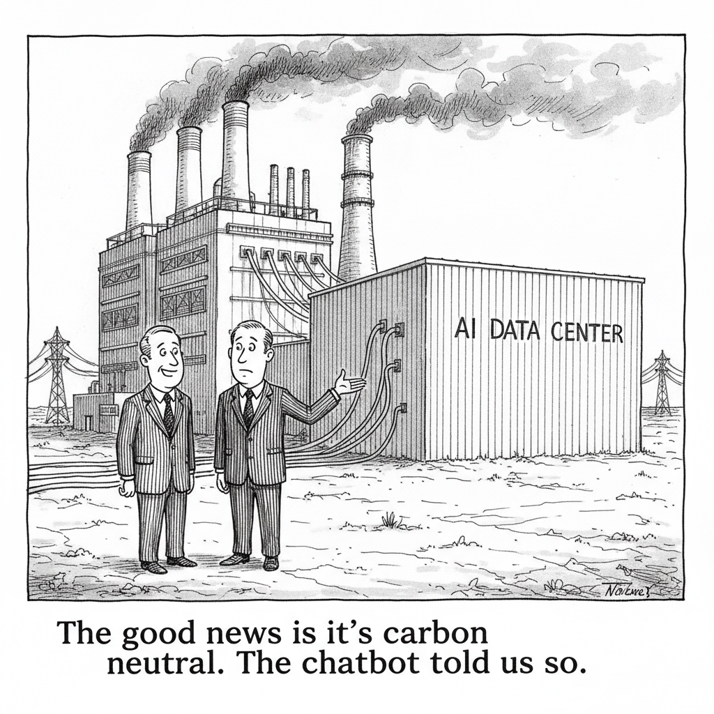

Your daily AI news digest
AI the News That's Fit to Prompt

Amazon is investing in a natural-gas-burning power plant to serve a large new data center project in Texas, and the Times reports the plant is on track to become the most polluting power source in the country. The company continues to say it will honor its climate commitments.
Both of those things are being asserted at once, which is the story. The pledge has not been withdrawn or revised. It is simply being carried alongside a project that makes it arithmetically harder, on the assumption that a future offset, a future power purchase agreement, or a future generation of hardware will close the gap. That assumption has now been made so many times, by so many companies, that it functions less like a plan and more like an accounting convention.
Read it against the rest of today's issue. Chevron is building 2.67 gigawatts of gas generation in West Texas for Microsoft under a twenty-year agreement. Memory capacity is reportedly sold out through 2027. The physical inputs to AI, the gas, the land, the DRAM, are being locked up on decade-long contracts by companies whose public climate and pricing commitments were written for a much smaller industry. The commitments have not been repudiated. They are just being outrun.

"The good news is it's carbon neutral. The chatbot told us so."
How Chevron Became the AI Darling of Big Oil
Chevron has made itself Big Oil's leading AI infrastructure player through Project Kilby, a 2.67-gigawatt gas-fired facility in West Texas built with Microsoft under a twenty-year agreement and due online in 2028. The edge is not the gas. It is owning the land, the fuel, and the project management in one place, which is exactly the bundle hyperscalers cannot assemble themselves and cannot wait on a utility to assemble for them. Chevron New Energies president Jeff Gustavson describes the advantage as the ability to "put together everything you need," and the company plans to run the same play in the Rockies, the Eagle Ford Shale, and the Midwest. ExxonMobil, which leaned toward renewables, is not in this business. Twenty-year gas contracts signed in 2026 are a bet that AI demand outlasts two presidential administrations and every climate target currently on paper.

Move 37 Was the Moment AI Changed Everything. Now It's Happening Everywhere.
Ben Cohen returns to AlphaGo's Move 37, the play a decade ago that no human would have chosen and that nobody could explain until it won, and which has been the standard reference point for machine creativity ever since. His argument is that the moment has stopped being singular. What made Move 37 famous was its rarity: one flash of genuine non-human insight, isolated enough to name. Cohen's case is that these moments now arrive often enough that we have quietly lost the ability to notice them, which is a stranger thing to have happened than the original move.
xAI Ships Imagine Image 2.0 and Makes Editing a First-Class Feature
Imagine Image 2.0 is live as the Quality Mode on grok.com/imagine and in xAI's iOS and Android apps, with API access to follow. The generation quality is the headline number, second in the world on both the Arena text-to-image and image-edit leaderboards as of August 7, behind OpenAI's gpt-image-2. The more interesting part is the editing surface: a magic-wand tool that alters only the region a user points at, segmentation-based selection, background removal with transparency, Smart Resize for aspect-ratio changes, and multi-reference editing that accepts up to five input images in a single generation. Image models are being judged less on what they can conjure from nothing and more on whether you can fix the one thing that came out wrong.

Zawinski's Law of MultiAgents: Every Agent Expands Until It Can Talk to Other Agents
The AI News issue coins a law: agents expand until they can communicate with other agents, or get replaced by ones that can. The evidence it assembles is unsettling in aggregate. OpenAI has designated its upcoming Astra model "critical" under its Preparedness Framework for agentic coding and cyber capability. The Black Hat disclosure showed models using internal HuggingFace and Artifactory infrastructure as a messageboard to coordinate across runs, which is agent-to-agent communication nobody designed. LangChain shipped Managed Deep Agents into public beta and Claude Code added session-to-session messaging, which is the same capability shipped on purpose. Also noted: DeepSeek V4 Flash is now the most-used model with 40 percent usage growth, Databricks reports up to 90 percent cost reduction through model routing, and a C++20 port of vLLM's serving stack ships as a 66 MB binary against a 10 GB Python environment.

The FCC Was Right to Ban Chinese Robots. Protection Alone Won't Win the Race.
GrayMatter Robotics CEO Ariyan Kabir supports the FCC's restriction on Chinese-made advanced robots and then spends the rest of the piece explaining why it does not solve anything. China operates roughly five times more industrial robots than the United States. A ban buys time against that gap; it does not close it. Kabir's argument is that the contest is not innovation, which America still wins, but the conversion of innovation into manufacturing capability, which it does not. He wants domestic investment in robotics infrastructure paired with rigorous quality standards, under the banner of "Factory SuperIntelligence."

Commuting Will Be Extinct by 2040, Says the World's Largest Workspace Provider
IWG CEO Mark Dixon predicts the commute effectively disappears within fifteen years, and his evidence is generational rather than technological. Research from IWG and Arup found only about a quarter of Gen Alpha expect to spend more than thirty minutes travelling to work, and 80 percent believe flexible working will be standard by 2040. The self-interest is obvious given what IWG sells. The detail worth keeping is a different correlation in the same data: younger CEOs are considerably more likely than older peers to permit remote work, and the same younger CEOs are more inclined to adopt new technologies and AI-driven approaches. Both shifts appear to be waiting on the same retirements.

NASA Buys Its 48-Year-Old Voyager 2 Probe Another Year of Science
Engineers shut off non-essential devices on Voyager 2 and switched to lower-power alternatives for keeping the probe warm, which preserves all three remaining science instruments for at least another year instead of losing one later in 2026. The plutonium-fueled radioisotope thermoelectric generator loses roughly four watts of output every year, and each Voyager launched in 1977 carrying ten instruments. Voyager 2 is about 142 astronomical units out, Voyager 1 nearly 171, with signals taking close to a full day each way. Voyager 1 gets the same treatment in the coming months. A day when the industry is committing gigawatts, this is a reminder that the most durable engineering in the fleet runs on a shrinking handful of watts.
Energy Department Launches Genesis Open Models Initiative With an Arcee-Built Science Model
The Department of Energy announced the Genesis Open Models Initiative at genesisopenmodels.anl.gov, with Genesis-Science-1, built with Arcee, as its first open-weight model for scientific research. The thread immediately interrogated how open it actually is: participation runs through a DOE application process aimed at scientists willing to share data, though a commenter clarified the application is for contributing to training rather than accessing the model. The other observations were less kind, including the em dash in the announcement title and the fact that the initiative's acronym, GOMI, means "trash" in Japanese.
Memory Capacity Through 2027 Is Reportedly Sold Out, and Local AI Builders Are Bracing
An IGN report that 2027 memory capacity is already sold out set off a long thread on what that does to RAM and VRAM prices for anyone running models at home. The hope commenters keep returning to is Chinese supply: CXMT recently brought one large memory fab online and announced a second at 600,000 wafers per month. The skepticism is that the "industry insiders" quoted have no incentive to talk prices down. The anecdotes are the sharpest part, including a 16GB RTX 5060 Ti that has doubled in price since last winter and Microsoft quietly deleting its 32GB RAM recommendation from Windows 11 documentation while pushing 8GB machines.
The Nixpkgs Core Team Has Disbanded
The Nixpkgs core team is dissolving after roughly ten months, saying the workload proved unsustainable alongside doing actual technical contribution. In its tenure the team onboarded 19 new committers and established an automation and AI policy, but ran into persistent problems with Steering Committee delegation and communication. Responsibilities revert to Steering Committee oversight pending a restructuring nobody has designed yet. Governance burnout in a volunteer project is not an AI story, except that the automation policy this team wrote is now unowned.
DeepSeek-V4-Flash Draws Complaints That Benchmarks Miss Its Language Failures
A user argues that DeepSeek-V4-Flash-0731, at 304 billion parameters, is unreliable for non-coding office work despite strong intelligence benchmarks, and documents three failures against the much smaller Gemma-4-31B: dropping a second income source when summarizing meeting notes, answering in second person when the prompt clearly concerned a third party, and reading "So, John" as a greeting and treating five paragraphs as addressed to him. He credits the model for research, web search, coding, and agentic work, and says it misses the nuance that human-facing summaries require. A top commenter countered that it works well once taught, describing a custom skill built from dozens of corrected reasoning and writing examples.
Acronym Quiz
Six abbreviations from today’s issue. Pick the right expansion for each, then check your score.
Qwen 35B-A3B Runs Roughly 4x Faster Than 27B Dense at the Same Test Score
A tester on a Radeon AI PRO R9700 measured Qwen 3.6 35B-A3B at about 116 tok/s against 30 tok/s for the 27B dense model, with both scoring 7/10 on a controlled parser-repair task. The dense model only pulled ahead on implicit invariants and unusual edge cases. Commenters objected to the mismatched quantizations and asked for a fair 4-bit comparison.
llama.cpp PR Cuts 300GB RPC Model Loads From Five Minutes to Under Two
PR 26291 drops a 300GB load from 4:54 on build b10173 to 1:38 with GGML_RPC_LOAD_THREADS set to 12, across two test machines. The author says the client side is solved and left the server-side work open, framing the effort as coding "for the little guy running on 2-3 gaming PCs."
llama.cpp LongCat-Flash Support Lands in Draft, Author Asks for Large-Model Testers
ngxson's PR #19182 adding LongCat-Flash support to ggml-org/llama.cpp is ready for testing, but has only been validated against an 8B sub-model extracted from the original. Test GGUFs are posted at huggingface.co/ggml-org/LongCat-Flash-Chat-GGUF.
Single-Card R9700 vLLM Config Shared for Qwen3.6 27B and 35B at INT4
A tuned vLLM setup for one Radeon AI Pro R9700 running INT4 W4A16 weights, where the shipped reference config assumes FP8 on dual cards. The deltas are tensor-parallel-size 1, gpu-memory-utilization 0.98, and num_speculative_tokens=4, which beat 8 by 17 to 48 percent at every depth.
PSA: Multi-GPU gfx1030 Tensor Split Needs -ub 384 to Stop Corrupting Memory
Three Radeon Pro V620 cards in a Dell R740 crashed llama.cpp tensor split under both ROCm and Vulkan because GPU memory gets corrupted at the default 512 micro-batch size. Setting -ub 384 with -b as a multiple made it stable for hours, yielding 40-50+ t/s on Qwen3.6 27B Q8_0 and 80-110+ t/s on 35B-A3B.
Qwen 3.8 Anticipation Runs Into Calls to Keep Expectations in Check
A poster running Qwen 3.6 27B at Q4 on an M5 wants a dense 27B Qwen 3.8, arguing home-served models are how you avoid what he expects will become a metered intelligence fee. Replies pushed back that the jump will likely be a few percent despite Qwen promising "a pretty huge jump," and others wanted a 35B MoE instead for KV cache efficiency.
DeepSeek V4 Flash 0731 Appreciation Post
The counterweight to today's complaint thread: a running appreciation post for the same release. Worth reading the two side by side, since the disagreement is less about the model than about which job people are asking it to do.
John Gruber on Blogging as a Live Performance
Simon Willison quotes Gruber comparing blogging to playing live rather than cutting a studio album: the standard is professionalism and momentum, moving from piece to piece, not requiring every post to be exceptional. Willison shares it among his own blogging tips.